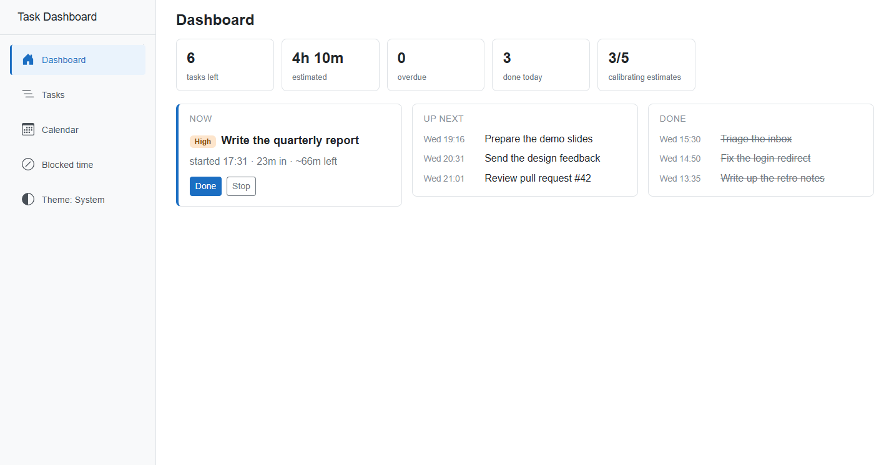
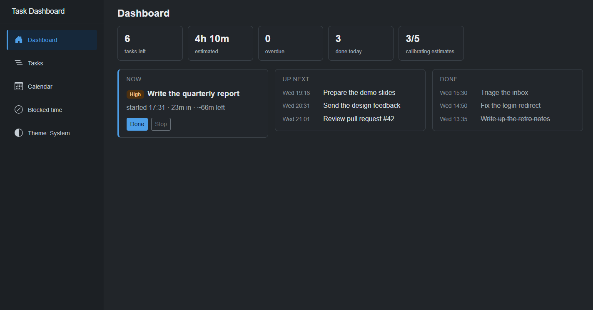
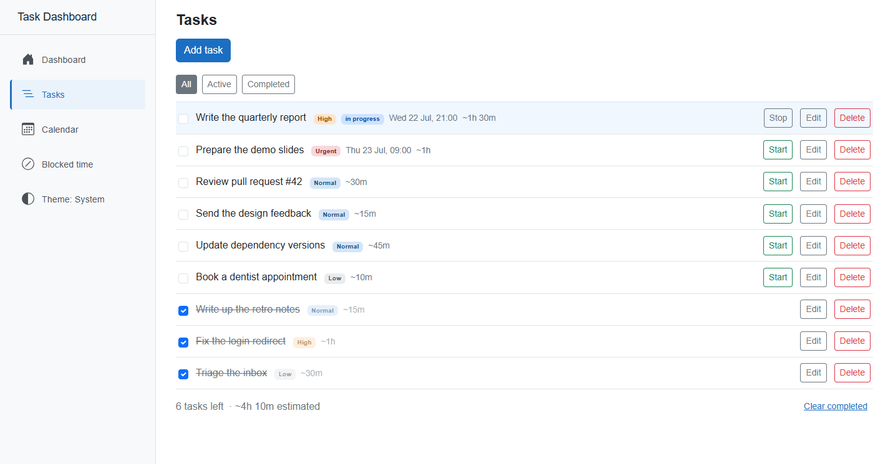
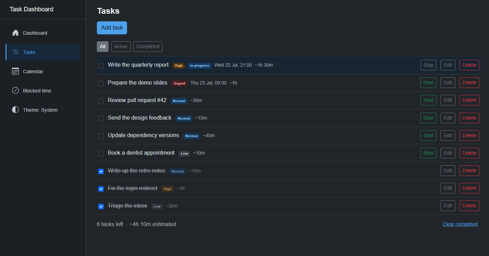
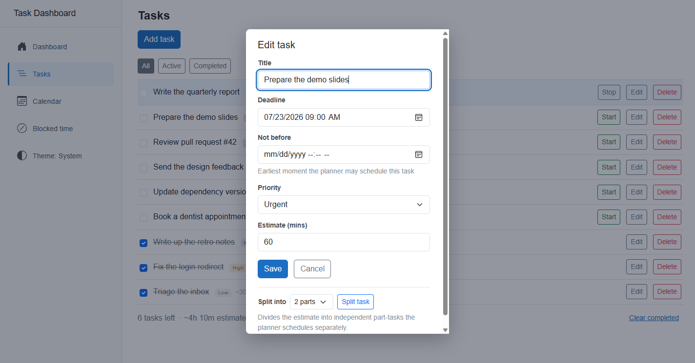
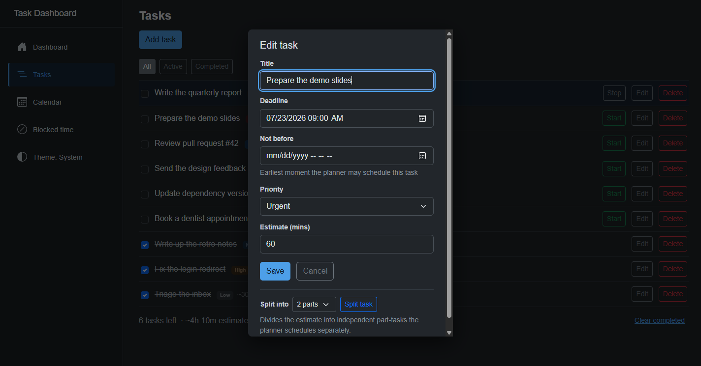
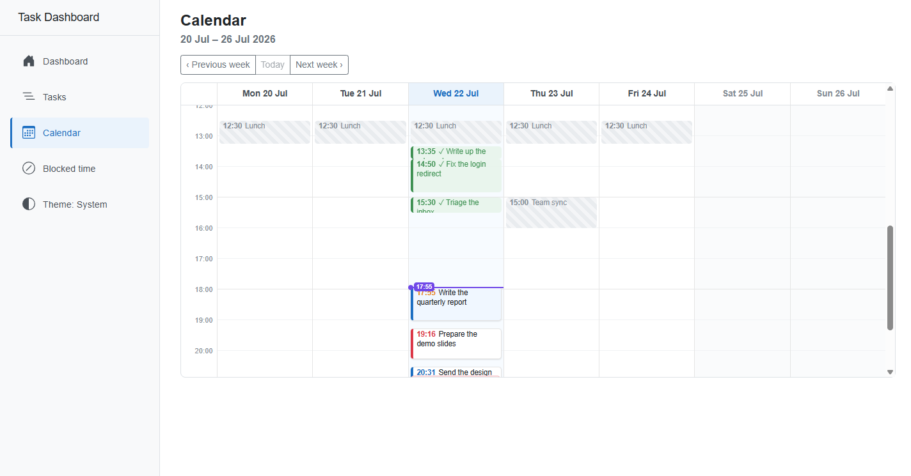
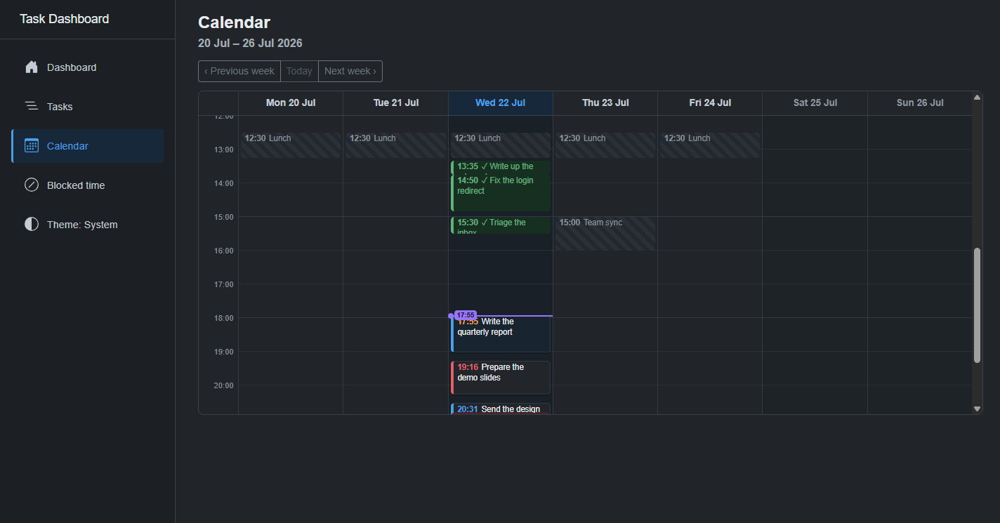
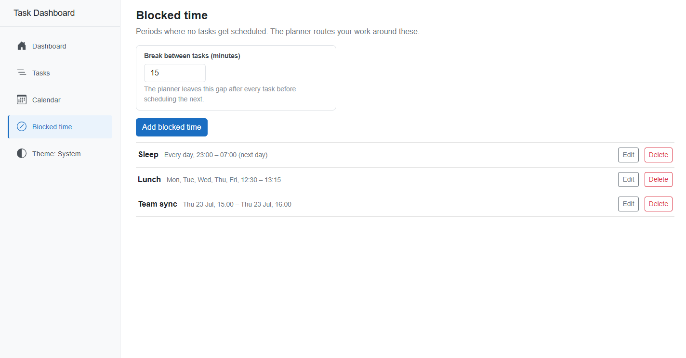
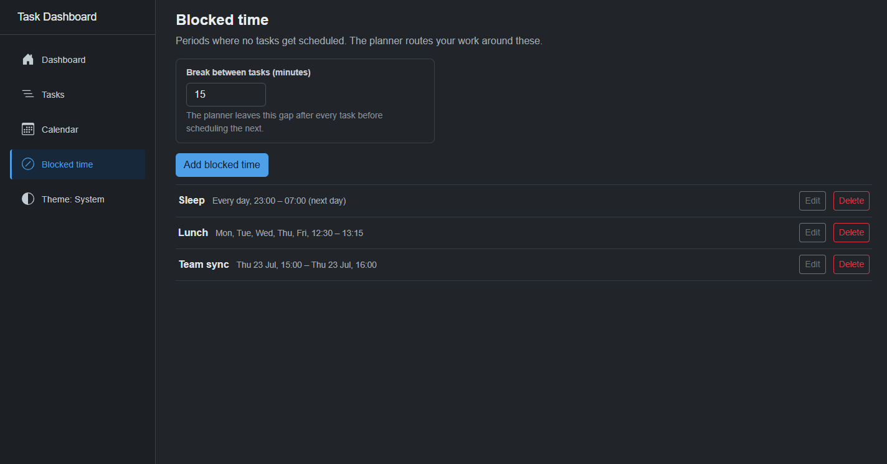

Dashboard
What am I meant to be doing right now
Opens on a single answer. The Now panel holds the task in progress with elapsed and remaining time; Up next is the planner's queue, not a list anyone ordered by hand.
- Start, Stop and Done act on the task without leaving the page
- Tiles total what is left, what is overdue, and what was finished today
- Estimate accuracy stays in calibration until five tasks have real spans


Tasks
The full list, with state visible at a glance
Every task carries an optional deadline, priority and estimate. Priority reads as a chip, in-progress as a badge, completion as a struck row.
- Filter All, Active or Completed; the footer totals only what remains
- Overdue rows flag themselves without needing to be opened
- Start on any row makes it the task the dashboard shows under Now


Edit task
One form, shared between add and edit
Add and edit render the same fields component, so the two cannot drift apart. Not-before constrains the earliest slot the planner may use.
- Split divides an estimate into two to four independent part-tasks
- The planner never splits on its own - that stays a decision you make
- Everything except the title is optional


Calendar
What the plan actually looks like against the week
One frame holding the whole day: finished work in green, blocked time as striped shading, the violet now-line, the task in progress, and the plan running out ahead of it.
- Unfinished tasks are placed earliest-deadline first, then by priority
- Concurrent entries split into side-by-side lanes instead of stacking
- A slot that cannot finish in time is tagged late, not just outlined


Blocked time
The hours the planner is not allowed to touch
Recurring weekly windows for sleep and lunch, one-off periods for appointments. A window may cross midnight.
- The break between tasks is a planner setting, not a per-task field
- Blocked periods draw straight onto the calendar as shading
- The planner routes around them rather than scheduling over them

